Step 1: Look at your module.
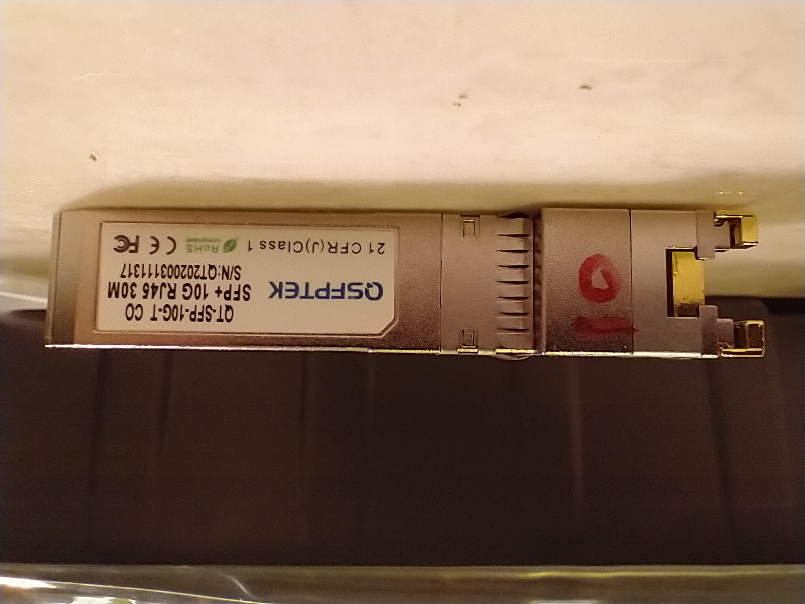The test subject
This is the SFP+ module we're going to be taking apart. Can you notice any ways in which we can open it?
Step 2: Look for free real estate.
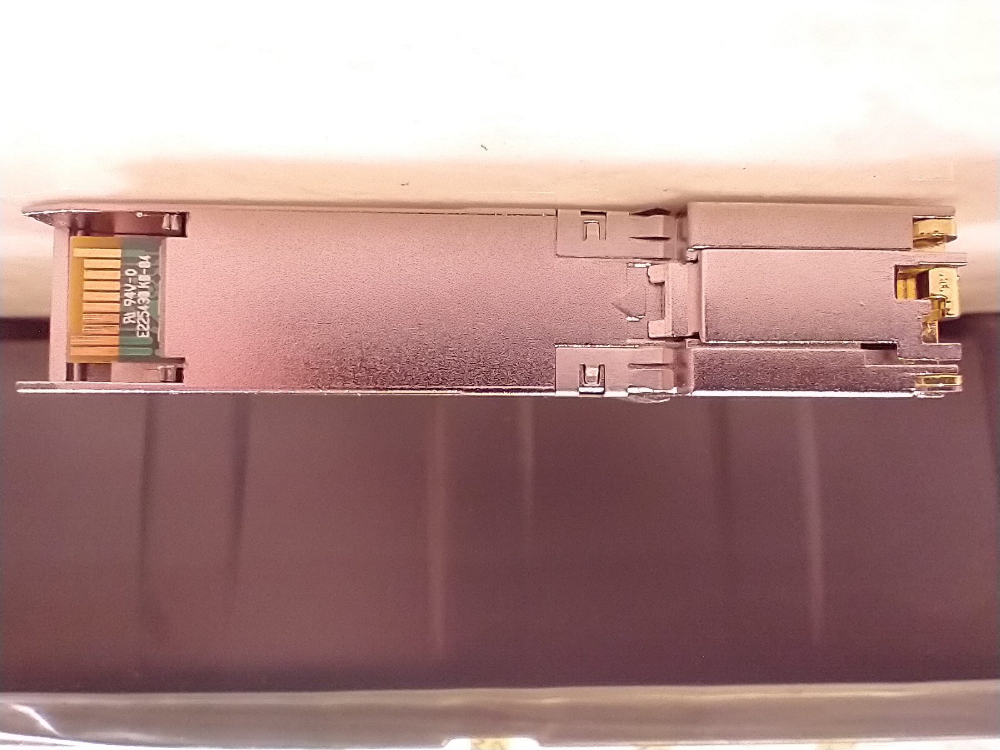There are a few opportunities here
Here's the bottom view of our module. Answering the above question, I can see a couple metal hook-type clips and some retainer clip.
Step 3: Remove the springy retainer clip.
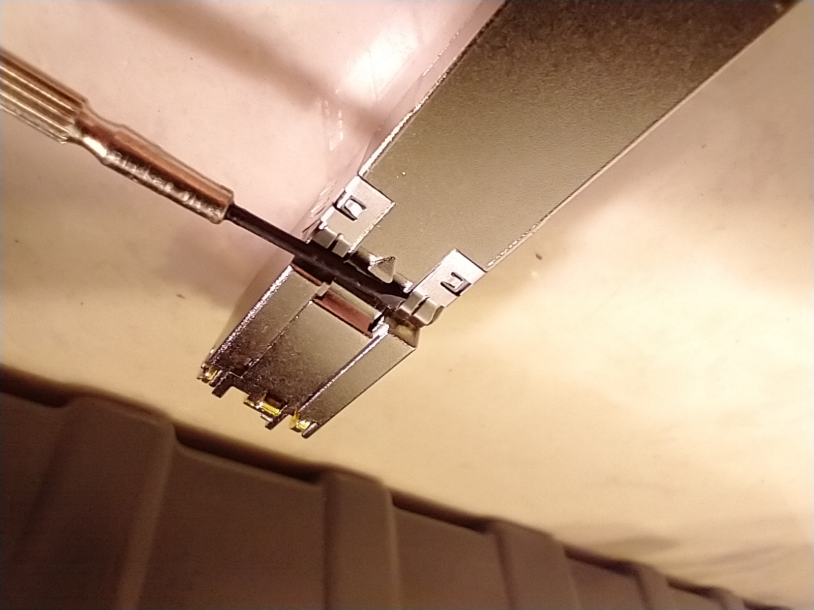Jab your screwdriver underneath.
Let's start by getting a precision screwdriver. It should fit under the semicircle-looking area in the retainer clip near the front of the SFP+ module.
Step 4: Slide the screwdriver over.
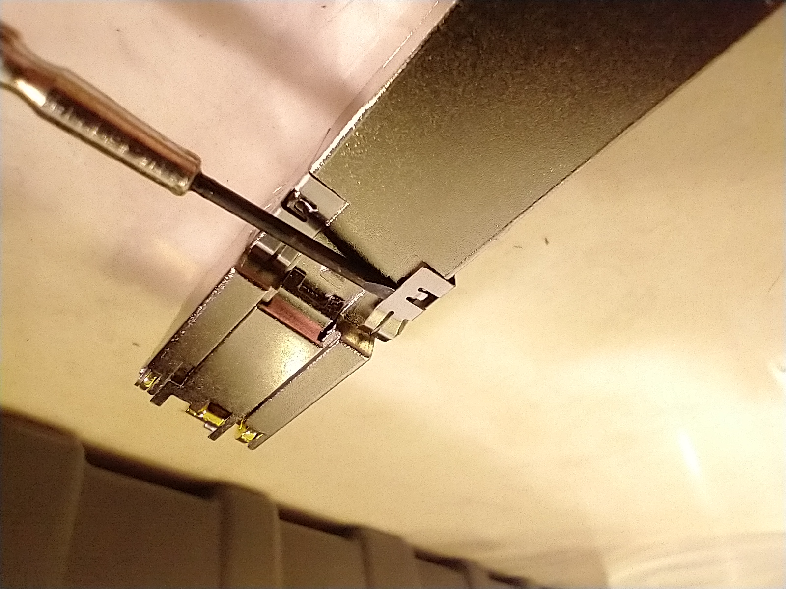Use care and precision!
Now that we've got the tip of the screwdriver underneath the clip, carefully slide it over to the lefthand side of the area under the retaining clip. If it gets pushed out, repeat Step 3.
Step 5: Repeat this for the other side.
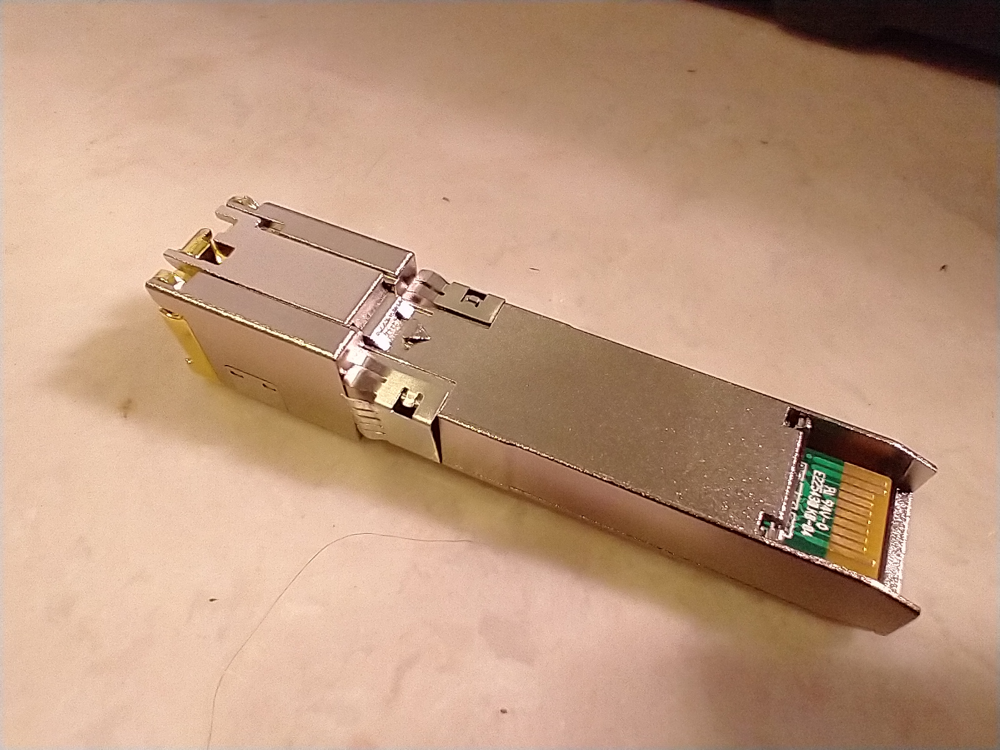The clip is ready to be removed
Repeat Step 3 and Step 4 for the other side of the clip.
Step 6: Start prying the clip.
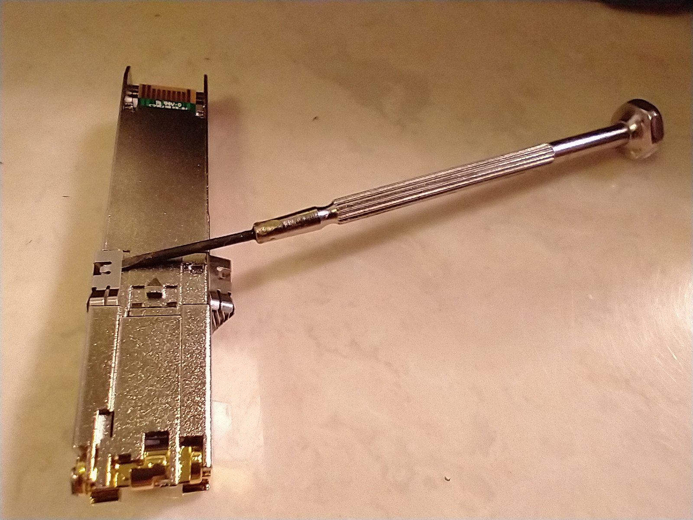Removing the clip
Pry at the clip to get it to lose grip of the module. Don't worry, as it seems to be made of a springy metal.
Step 7: Keep prying.
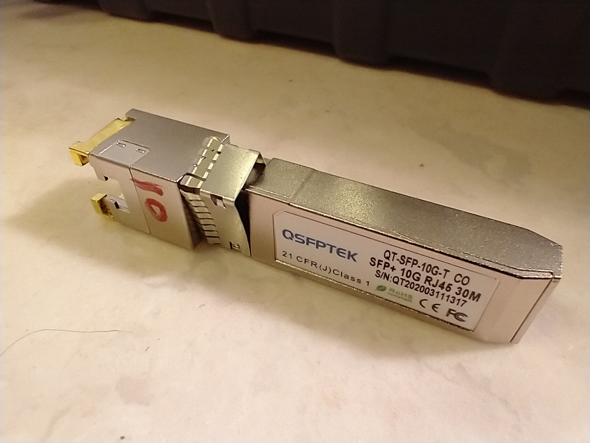Retainer clip being removed
Keep prying until it slides down the side of the module.
Step 8: Remove the clip.
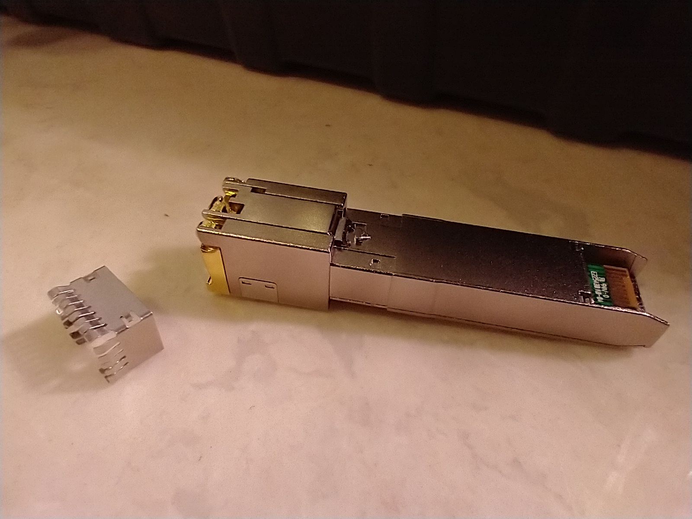Removed
Try to remove the retainer clip. It could be tricky. However, never give up!
Step 9: Look for more free real estate.
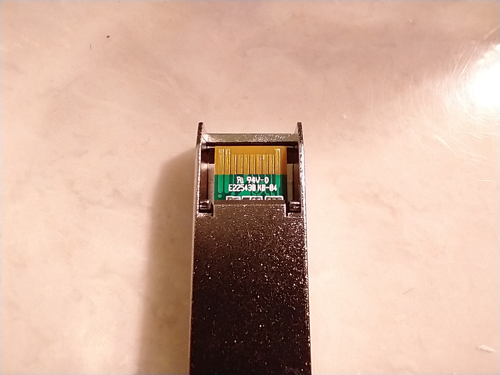Closeup of the bottom
We're almost at the endgame. Can you see those two little clips next to the circuitboard? Pry those up using the appropriate size of precision screwdriver.
Then, grntly push on them with the tip of your screwdriver to make the next step easier.
Step 10: Pry off the top.
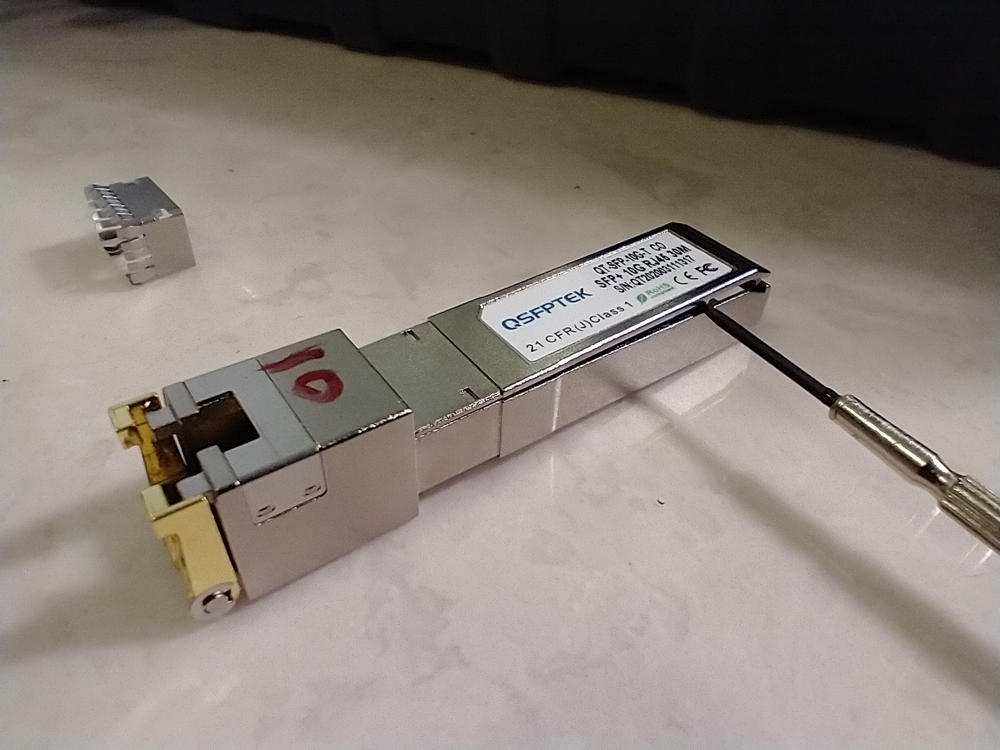Pry off the top part
Use your tiniest screwdriver and lodge its tip in the seam where the top cover and the main body of the module meet. Now pry it up and remove the cover.
Step 11: We're in.
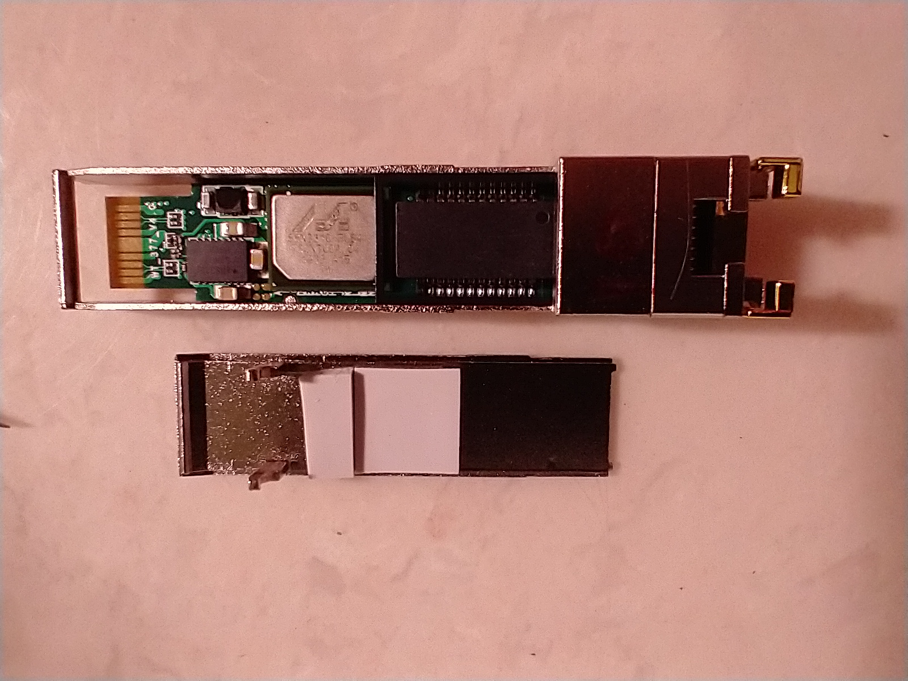Inside view
We can new see the inside of the module. There's not much here, but that shiny chip in the middle looks interesting. You can't see this on camera, but the chip is covered in a light
coat of mineral oil. This mineral oil helps transfer heat to the thermal pads on the top cover.
Step 12: Check out the chip.
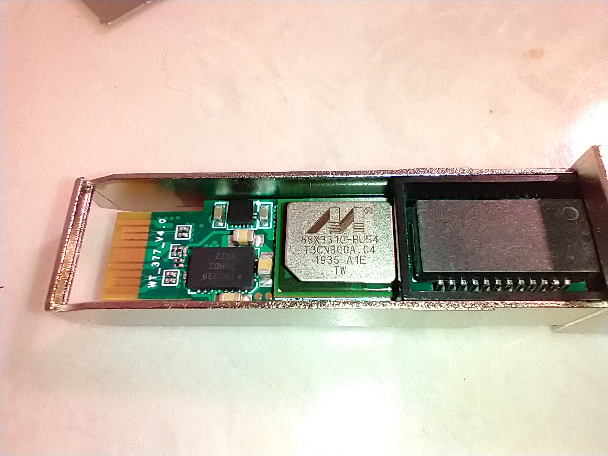The ethernet chip inside
This is interesting. Most/all of the processing in the module is done by this NIC chip. The transformer (the big black chip) only serves as a way to amplify the signals produced by the NIC.
Surprisingly, this isn't as much of a party as I thought it was going to be. Ironically, LTE modems, which arguably have an easier job at communicating, have entire Linux systems inside of them
with all the parts needed to be a complete computer.
That's it! 12 steps sounds like a lot, but each step was trivial to do by itself. Never let such a title ("...12 Easy Steps") discourage you from trying something.